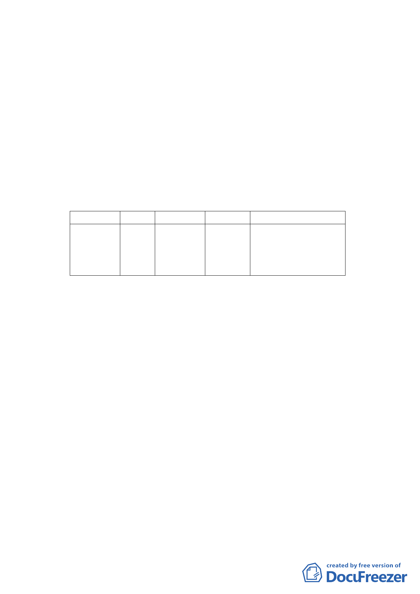

日府都規字第10232551200號公告實施在案。
本計畫區位於前開主要計畫案內「貓空地區」可申請開
發許可範圍，依前開主要計畫、細部計畫之規定提出開發計
畫並變更保護區為休閒農業特定專用區。
三、 原都市計畫及土地使用現況
本計畫區及週邊地區現況均為「保護區」，為既有之茶
坊，目前營業中，建物平時主要作為茶坊及餐飲使用。
四、 修訂主要及細部計畫內容：
（一） 變更主要計畫內容
1.變更土地使用分區
位置 原計畫 新計畫
文山區指南
段四小段
178、178-3
保護區
休閒農業
特定專用區
地號
面積（㎡）
變更理由
配合貓空地區觀光茶園
2,270
發展，提供優質休閒活動
環境、推動精緻農業，形
塑貓空地區茶文化特色。
2.公共設施暨回饋計畫
依「臺北市文山區指南里、老泉里部分保護區可
申請開發許可範圍開發許可處理原則」，本計畫區以外
部成本內部化、使用者付費為回饋處理原則，除依「農
業用地變更回饋金撥繳及分配利用辦法」及「山坡地
開發利用回饋金繳交辦法」等繳交回饋金外，需提供
區外公共設施、區內公共服務性設施等回饋事項：
（1）區外公共設施
本計畫區將以基地鄰接指南路三段38巷側自
道路中心線退縮補足3公尺寬度設置，退縮部分
供公眾通行，且退縮部分用地捐贈予臺北市，面
積約 7.97平方公尺。
（2）區內公共服務性設施
本計畫區需自行規劃設置足敷開發行為衍生
所需且符合飲用水標準之飲水、給水系統，及符
合放流標準之適當排水系、污水處理系統、垃圾
處理等及其他必要性服務設施，並於開發計畫書
-6-